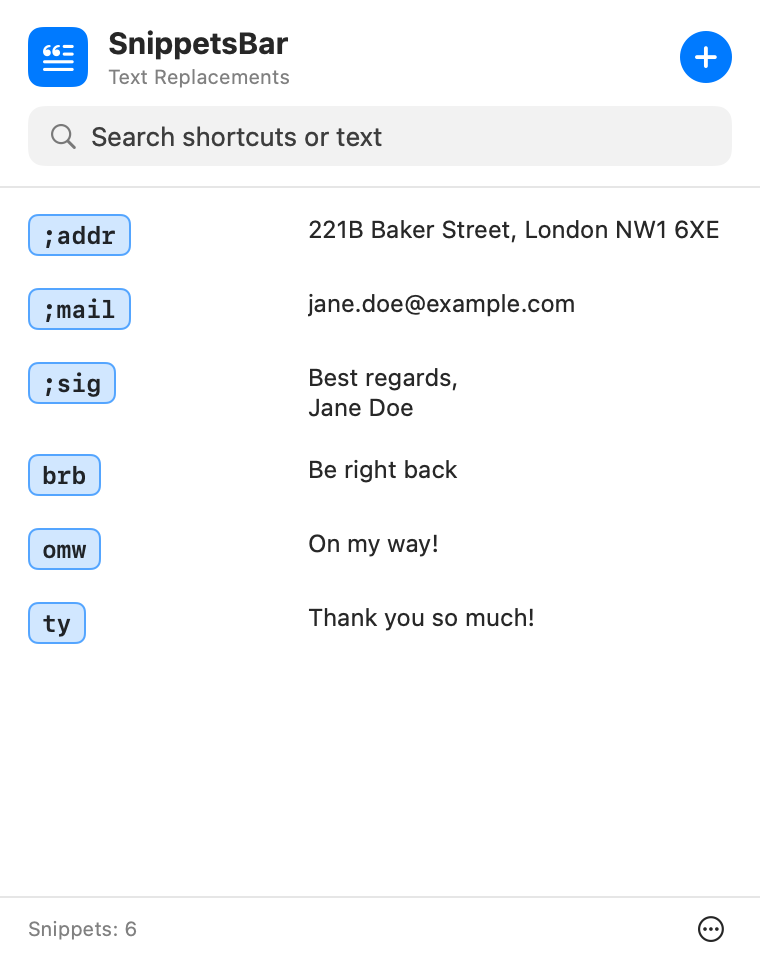
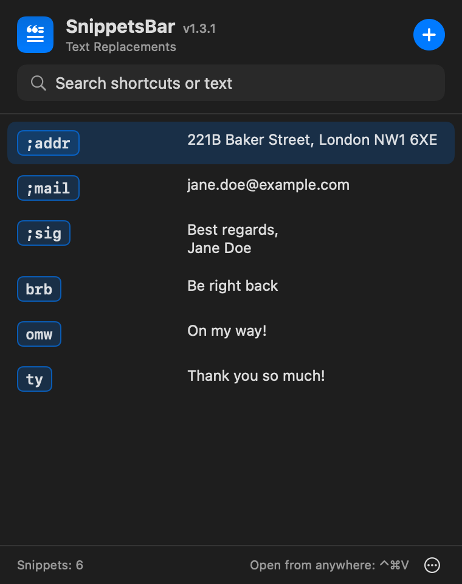
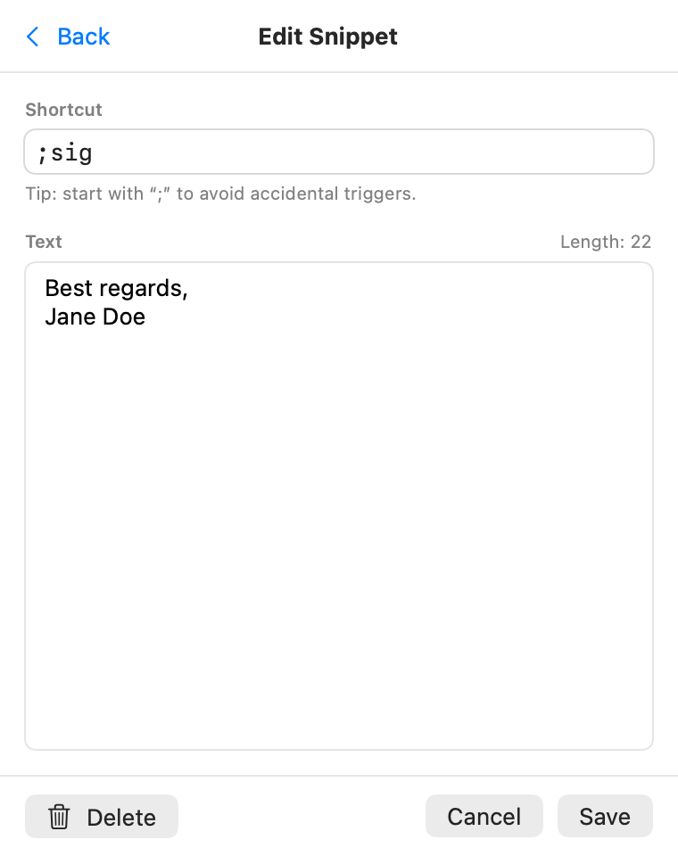
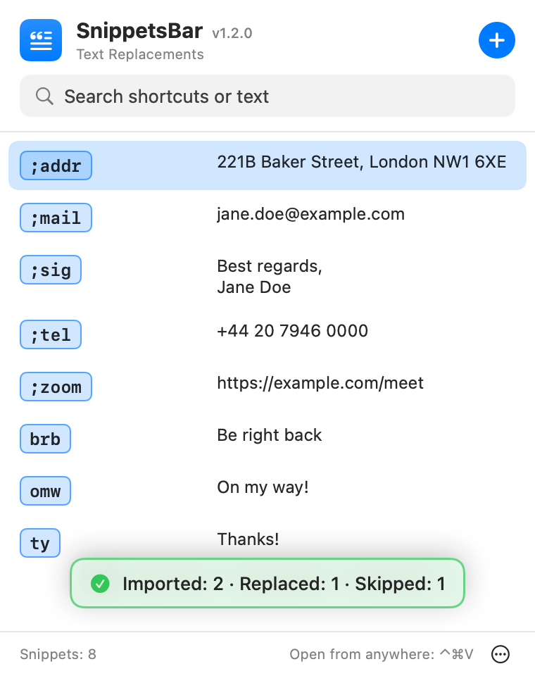

- 1 · Edit
- 2 · Write
The change goes into TextReplacements.db
The Core Data store in~/Library/KeyboardServices/. A backup is saved before the first change of each session. - 3 · Sync
iCloud pushes it to your other devices
Entries are flaggedZNEEDSSAVETOCLOUD, and deletes are soft (ZWASDELETED), as macOS does them. - 4 · Expand
macOS replaces the shortcut as you type
Apps read the list at launch: quit and reopen an app to see a new snippet there.
macOS menu bar app · free · GPL v3
Your Mac already expands text. SnippetsBar makes it easy to manage.
A small front end for the built-in macOS Text Replacements. List, search, add and edit your snippets from the menu bar. macOS does the expansion and iCloud syncs them to your iPhone and iPad.
New Message — Mail
To: jane.doe@example.com
Subject: Delivery address
Hi Sam, please send it to 221B Baker Street, London NW1 6XE
;addris replaced by macOS as you type
How it works
No expansion engine, no keyboard monitoring
Apple has no public API for text replacements, so SnippetsBar edits the database System Settings uses. macOS handles the rest.
Features
Everything you need for everyday snippets
No variables, fill-in fields, scripts or rich text. SnippetsBar manages Text Replacements and nothing else.
- ⌃⌘V
Quick pick from anywhere
Type to filter, ↑ ↓ to select, ↩ to copy. The shortcut can be changed. - click
Instant list and search
Click a snippet to copy its text, double-click to edit it. - ⌘N
Add, edit, delete
Delete from the right-click menu, then undo with ⌘Z if needed. - ;sig
Duplicate shortcut detection
You are warned before saving a shortcut that already exists. - .plist
Import and export
Same format as System Settings. Exact duplicates are skipped; you choose once what to do with conflicts. - ⌘,
Settings
Launch at login, quick pick shortcut, and a daily update check you can turn off. - 8
Eight languages
English, French, Spanish, Italian, German, Portuguese (Brazil), Japanese, Chinese (Simplified).
Screenshots
One panel, one click away
Follows your macOS appearance, light or dark.




Where it works
Wherever macOS Text Replacements work
Expansion is done by macOS, so SnippetsBar follows the same rules as the built-in feature.
- Expands
Mail, Notes, Messages, TextEdit, Pages, Safari
Apps that use the standard macOS text fields. - Copy instead
Terminal, iTerm2, Warp, VS Code terminal, many Electron apps
They handle text input themselves. Copy the snippet with ⌃⌘V, then paste with ⌘V.
Install
Two minutes, one Gatekeeper step
The app has an ad hoc signature, so macOS asks once before opening it.
- 1 · Download
Get the latest zip
Unzip it and moveSnippetsBar.appto Applications. - 2 · Open
Allow the first launch
System Settings › Privacy & Security › Open Anyway, or run the command below. - 3 · Access
Grant Full Disk Access if asked
A button in the app takes you there. After an update, remove the app from the list and add it again.
Remove the quarantine flag
$ xattr -d com.apple.quarantine /Applications/SnippetsBar.app
Or build from source
$ git clone https://github.com/giboow/SnippetsBar.git && cd SnippetsBar $ ./build-app.sh $ mv SnippetsBar.app /Applications/